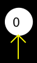

Sensory and Motor Couplings
A neuron in a network can be coupled to any object in an Odor or Data World. Worlds are virtual examples of how neural networks model reality, and the coupling of a neuron to an object symbolizes their interaction. This coupling can take two essential forms: it can be a motor command that gives symbolic information to an agent; or a sensor, that receives information from an agent in a Odor World or a Data World.
Input nodes are like sensory neurons or receptors; they receive information from the world. They can be identified by an arrow pointing toward the neuron.

Output nodes are like simplified motor neurons that cause the creature to move. They can be identfied by an arrow pointing away from the neuron.
To create a coupling, right click on a neuron, and highlight Motor Commands or Sensors from the menu. A list of all open worlds will appear. Highlight the world that contains the object you would like the neuron to interact with and select a command or sensor. For details see:
To remove a coupling, right-click on the selected neuron, highlight either Motor Commands or Sensors, then select "Not Input" or "Not Output."
To display coupling identifications, select Show I/O Info in the Network's Edit Menu.
Network-World Interaction Mode
The network-world interaction button on the toolbar acts like a two-way valve, which turns the flow of information to and from the world on or off. Each time this button is pressed, it goes to the next mode in a cycle of four modes:
World to Network. The world is sending information to the network. You "push" the creature around to see what affect this has on the network Network to world . The network is sending information to the world. The network controls the creature. Play with the network to see how the creature behaves. Both ways . The world and net are both talking to each other. Note that you can still intervene and modify network or world on the fly. Neither way. Network and world are disconnected. Good for testing the network independently of the world.